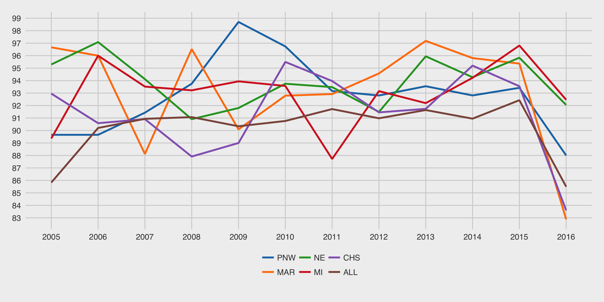

I created this at the reqest of Michael Corsetto to look into the impact that the district system has on team sustainability. Included is a list of teams in each year ([1992–2016]) in the file teams.csv It was created based off the Mark McLeod's data set.

This is a plot of the retention percentages for each year ([2005–2016]). Higher is better.
There's an included R script included (attrition.r) that will generate a plot of team attritions in various regions.
I've created an annotations file that tries to allow for annotating the retention plot with relvant events. I haven't figured out how to automate placement on the Y Axis, for now just alternate 100 and 99. The script will pick up the annotations and add it to the annoted retention plot (shown below) Please note, the ONLY change in this plot is the annotations, any changes you make in the unannoted one will reflect in the annotated one.